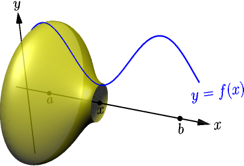
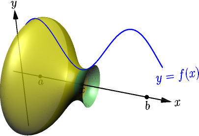
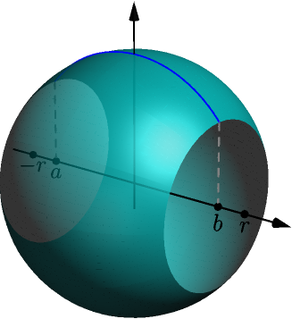

Area of Surface of Revolution¶
The surface of a solid of revolution is called the surface of revolution. Our goal is to calculate the area of a surface of revolution.
We have not defined what exactly the area of a shape on a plane means, and the area of a surface in 3D is even more difficult to define. Instead of defining it properly, I'll make a couple assumptions about how areas behave during the derivations.
Cone area¶
Consider a cone with radius $r$ and side length $s$.
Any cone can be created from a piece of paper cut to the shape of a sector of a circle.
Now the area of the cone, not including its red bottom circle, is the area of this circle sector. When folding the circle sector, its radius becomes the side length of the cone, so that's $s$, and its arc length becomes the perimeter of the cone, which is $2 \pi r$.
Because $2\pi s$ is the perimeter of the entire circle, the ratio $$ \frac{2\pi r}{2\pi s} = \frac{r}{s} $$ describes how much of an entire circle this sector is. For example, if we had $1/4$ of a circle, then $r/s=1/4$, and the area of the cone would be $$ \text{cone area} = \frac{1}{4} \cdot \underbrace{\text{area of circle with radius $s$}}_{\pi s^2}. $$ In general, we have $$ \text{cone area} = \frac{r}{s} \pi s^2 = \pi r s. $$
The area of a cone with side length $s$ and bottom radius $r$, not including the bottom circle, is $\pi r s$.
Area of surface of revolution¶
Consider the surface of revolution created by rotating the graph $y=f(x)$ about the $x$ axis on $[a,x]$, where $x$ is a number between $a$ and $b$. Let $A(x)$ denote the area of this surface.

Our goal is to calculate $A(b)$, the area between $a$ and $b$. For doing this, we first calculate the derivative $$ A'(x) = \lim_{h \to 0} \frac{A(x+h)-A(x)}{h}. $$ We calculate only the right limit $$ \lim_{h \to 0^+} \frac{A(x+h)-A(x)}{h} $$ because a similar calculation works for the corresponding left limit.
Let $h$ be a positive number. Consider the area of the "slice" between $x$ and $x+h$ (green).

Because $A(x+h)$ is the area between $a$ and $x+h$, including $A(x)$ (yellow) and the area of the slice (blue), we have $$ \text{slice area} = A(x+h)-A(x). $$ The slice looks almost like a part of a cone:
Here's what it looks like from the side:
From this view, it's easy to see that the slice is not actually a slice of the cone when the graph $y=f(x)$ is curved. This means that the area of the slice of our surface of revolution can be different than the area of the corresponding slice of a cone. But for this derivation, we assume that we get the correct limit even if we use a cone slice area instead. This is yet another assumption about how areas work, and having to make this assumption is a downside of deriving the area formula this way.
Now we see a cone consisting of the cone slice we are interested in and a smaller cone. Let $s$ denote the side length of the smaller cone, and let $p = f(x+h)-f(x)$. In the pictures, we have a positive $p$, because $f(x) < f(x+h)$.
By the Pythagorean theorem, the side length of the bigger cone is $s + \sqrt{p^2+h^2}$. The radiuses of the cones are $f(x)$ and $f(x)+p$, so their areas are $\pi f(x)s$ and $\pi (f(x)+p)(s+\sqrt{p^2+h^2})$. The difference of these areas is $$ \begin{align} \text{cone slice area} &= \pi f(x+h)\left(s+\sqrt{p^2+h^2}\right) - \pi f(x)s \\ &= \pi(f(x)+p)\left(s+\sqrt{p^2+h^2}\right) - \pi f(x)s \\ &= \pi\left(f(x)s + f(x)\sqrt{p^2+h^2} + ps + p\sqrt{p^2+h^2}\right) - \pi f(x)s \\ &= \pi f(x)s + \pi f(x)\sqrt{p^2+h^2} + \pi ps + \pi p\sqrt{p^2+h^2} - \pi f(x)s \\ &= \pi f(x)\sqrt{p^2+h^2} + \pi ps + \pi p\sqrt{p^2+h^2}. \end{align} $$ The two triangles have two same angles (90 degrees in bottom right and the angle at their left corner), so the ratios of corresponding sides are the same (TODO), and we get $$ \frac{f(x)}{s} = \frac{p}{\sqrt{p^2+h^2}}. $$ This gives $ps=f(x)\sqrt{p^2+h^2}$, so $$ \begin{align} \text{cone slice area} &= 2\pi f(x)\sqrt{p^2+h^2} + \pi p\sqrt{p^2+h^2} \\ &= \pi(2f(x)+p)\sqrt{p^2+h^2}. \end{align} $$ We assumed that $p > 0$, but this also works if $p < 0$, and the derivation for that case is similar. If $p=0$, we have a cylinder with radius $f(x)$ and height $h$ instead of cones, and the area of the cylinder is $$ 2\pi f(x) h = \pi(2f(x)+0)\sqrt{0^2+h^2}. $$ So, the above equation works for all values of $p$, and now we get $$ \begin{align} A'(x) &= \lim_{h \to 0^+} \frac{A(x+h)-A(x)}{h} \\ &= \lim_{h \to 0^+} \frac{\text{cone slice area}}{h} \\ &= \lim_{h \to 0^+} \frac{\pi(2f(x)+p)\sqrt{p^2+h^2}}{\sqrt{h^2}} \\ &= \lim_{h \to 0^+} \left( \pi(2f(x)+p)\sqrt{\frac{p^2+h^2}{h^2}} \right) \\ &= \lim_{h \to 0^+} \left( \pi(2f(x)+p)\sqrt{\left( \frac{p}{h} \right)^2+1} \right). \end{align} $$ With limit rules and continuity of square root, we get $$ \begin{align} A'(x) &= \pi\left( 2f(x)+\lim_{h \to 0^+}p \right)\sqrt{\left( \lim_{h \to 0^+} \frac{p}{h} \right)^2+1}. \end{align} $$ Here $$ \lim_{h \to 0^+} \frac{p}{h} = \lim_{h \to 0^+} \frac{f(x+h)-f(x)}{h} = f'(x) $$ is the derivative of $f$, assuming it exists. Also, if $f$ is continuous, we have $$ \begin{align} \lim_{h \to 0^+} p &= \lim_{h \to 0^+} f(x+h) - \lim_{h \to 0^+} f(x) \\ &= f\left(\lim_{h \to 0^+}(x+h)\right) - f(x) \\ &= f(x+0) - f(x) = 0. \end{align} $$ By putting all this together, we get $$ A'(x) = 2\pi f(x)\sqrt{1+f'(x)^2}. $$ With part 2 of the fundamental theorem of calculus, we now get $$ A(b)-A(a) = \int_a^b A'(x)\ dx = \int_a^b 2\pi f(x)\sqrt{1+f'(x)^2}\ dx. $$ Because $A(a)$ is the area between $a$ and $a$, it's zero, and the above integral is $A(b)$, the area between $a$ and $b$.
For this to work, $A'(x)$ must be continuous on $[a,b]$, and for that, it's enough for $f$ and $f'$ to be continuous on $[a,b]$. Because a function that has a derivative is continuous (TODO), it is enough to assume that $f'$ exists and is continuous on $[a,b]$.
Suppose that a function $f$ has a derivative $f'$ that is continuous on $[a,b]$, and assume that $f(x) \ge 0$ for all $x \in [a,b]$. Then the area of the solid of revolution of $f$ on $[a,b]$ is $$ \int_a^b 2\pi f(x) \sqrt{1+f'(x)^2}\ dx. $$

Example: area of cone (again)¶
Just like in this example, we get a cone with height $h$ and radius $r$ when the graph $y=\frac{r}{h}x$ rotates about the $x$ axis on $[0,h]$.
By plugging in $f(x)=\frac{r}{h}x$ and $f'(x)=\frac{r}{h}$, we get $$ \begin{align} \int_0^h 2\pi \frac{r}{h}x \sqrt{1 + \left(\frac{r}{h}\right)^2}\ dx &= 2\pi \frac{r}{h}\sqrt{1 + \frac{r^2}{h^2}}\int_0^h x \ dx \\ &= 2\pi \frac{r}{h}\sqrt{1 + \frac{r^2}{h^2}}\left[ \frac{1}{2} x^2 \right]_0^h \\ &= 2\pi \frac{r}{h}\sqrt{1 + \frac{r^2}{h^2}}\frac{1}{2} h^2 \\ &= \pi rh\sqrt{1 + \frac{r^2}{h^2}} \\ &= \pi r\sqrt{h^2}\sqrt{1 + \frac{r^2}{h^2}} \\ &= \pi r\sqrt{h^2\left( 1 + \frac{r^2}{h^2} \right)} \\ &= \pi r\sqrt{h^2+r^2}. \end{align} $$ By letting $s=\sqrt{h^2+r^2}$ denote the side length, we get $\pi rs$ as expected.
Example: area of ball¶
Just like in this example, we get a ball of radius $r$ as the curve $y=\sqrt{r^2-x^2}$ rotates about the $x$ axis on $[-r,r]$.

The derivative of the function $f(x) = \sqrt{r^2-x^2}$ is $$ f'(x) = \frac{1}{2\sqrt{r^2-x^2}}(0-2x) = \frac{-x}{\sqrt{r^2-x^2}}, $$ where we used derivative of square root and chain rule. This is undefined when $x=-r$ or $x=r$, but if $-r < a < b < r$, then the derivative exists and is continuous on $[a,b]$. The corresponding area is not the area of the entire ball, but only a part of it.

This area is $$ \begin{align} \int_a^b 2\pi f(x) \sqrt{1+f'(x)^2}\ dx &= \int_a^b 2\pi f(x) \sqrt{1+f'(x)^2}\ dx \\ &= \int_a^b 2\pi \sqrt{r^2-x^2} \sqrt{1+\frac{x^2}{r^2-x^2}}\ dx \\ &= \int_a^b 2\pi \sqrt{r^2-x^2} \sqrt{\frac{r^2-x^2+x^2}{r^2-x^2}}\ dx \\ &= \int_a^b 2\pi \sqrt{r^2-x^2} \frac{\sqrt{r^2}}{\sqrt{r^2-x^2}}\ dx \\ &= \int_a^b 2\pi r\ dx = \left[ 2\pi rx \right]_a^b = 2\pi rb - 2\pi ra. \end{align} $$ To get the area of the entire ball, we can take limits with $a \to -r^+$ and $b \to r^-$, and we get $$ 2\pi r^2 - 2\pi r(-r) = 4\pi r^2. $$
The area of a ball with radius $r$ is $4\pi r^2$.
The area is somewhat surprisingly 4 times the corresponding circle area. For different ways to derive this, see this 3blue1brown video.
Example: area and volume with $y=1/x$¶
Let $b > 1$. Consider the "horn" created by $y=1/x$ as it rotates about the $x$ axis on $[1,b]$.
The volume of this solid of revolution is $$ \begin{align} \int_1^b \pi\left( \frac{1}{x} \right)^2\ dx &= \pi\int_1^b x^{-2}\ dx = \pi\left[ \frac{1}{-1} x^{-1} \right]_1^b \\ &= \pi\left( -\frac{1}{b}-(-1) \right) = \pi-\frac{\pi}{b}. \end{align} $$ This is always less than $\pi$, no matter how long the horn is. On the other hand, because $$ \frac{d}{dx} \left( \frac{1}{x} \right) = \frac{d}{dx}x^{-1} = (-1)x^{-2}, $$ the area of the surface of revolution is $$ \begin{align} \text{area} = \int_1^b 2\pi\frac{1}{x}\sqrt{1+\left((-1)x^{-2}\right)^2}\ dx = 2\pi\int_1^b \frac{1}{x}\sqrt{1+\frac{1}{x^4}}\ dx. \end{align} $$ Calculating this integral is difficult, but because $\frac{1}{x^4} > 0$, we have $\sqrt{1 + \frac{1}{x^4}} > 1$, and so $$ \frac{1}{x}\sqrt{1 + \frac{1}{x^4}} > \frac{1}{x} $$ and we get $$ \text{area} \ge 2\pi\int_1^b \frac{1}{x}\ dx = 2\pi(\ln(b)-\underbrace{\ln(1)}_0)=2\pi\ln(b). $$ Because $2\pi > 1$, the area is greater than $\ln(b)$.
By choosing a long enough horn (that is, a large enough $b$), we can make $\ln(b)$ as big as we want, and hence make the area as big as we want. For example, if you want the area to be greater than $100$, you can choose $b = e^{100}$, which gives $$ \text{area} > \ln(b) = \ln(e^{100}) = 100. $$ This also works for any other positive number instead of $100$.
Now consider the infinitely long horn of $y=1/x$ rotating on $[1,\infty)$.
- The infinitely long horn has finite volume. Any finitely long part of the horn has volume less than $\pi$, so the total volume can't be greater than $\pi$.
- The infinitely long horn has infinite area. If its area was finite, then a finitely long part of it would have an even bigger area, which is impossible.
The area of an object can be infinite even if the volume is finite.
This result feels weird. From the above calculations, you can see that this is essentially the weirdness of how antiderivative of $x^n$ splits into two different cases depending on whether $n$ is $-1$ or something else.
Like most other "weird" results in mathematics, this result involves an object that does not exist in the real world, because any actual horn in the real world is only finitely long.